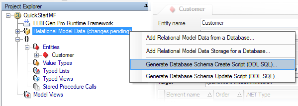
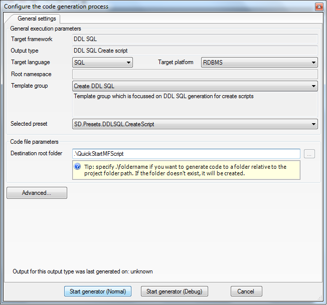

Creating DDL SQL Create Scripts to create Relational database schema |
|
|
Right click the 'Relational Model Data' node in the Project Explorer or Catalog Explorer and select Generate Database Schema Create Script (DDL SQL) from the context menu.  |
|
|
This will bring up the
Code Generation Configuration dialog
to guide you through the DDL SQL script creation process of
exporting a create/update script.  |
|
| Run the generated script on the relational database you have chosen to work on. The create action of a 'schema' or 'catalog'/'database' might not be scriptable for the RDBMS of your choice and might be required to be done manually. The script contains, when applicable, code to help you with this. | |
| Generate source code | |